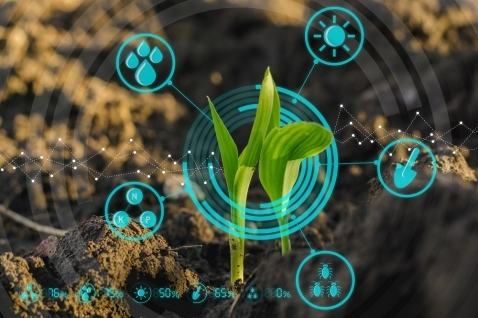

En NaturAPP, En NaturAPP, nos enorgullece ser una empresa comprometida con la causa ambiental, ofreciendo soluciones innovadoras y educativas para fomentar un mundo más verde y saludable; creemos en la poderosa combinación de la tecnología y la naturaleza para impulsar un cambio positivo.
Nuestros servicios te brindan una visión del futuro, permitiéndote anticipar y prepararte de manera efectiva para las condiciones venideras. Desde mapas de riesgo climático hasta escenarios de cambio ambiental, te proporcionamos insights fundamentales para una planificación estratégica y decisiones informadas
En NaturAPP, entendemos la importancia crítica de monitorear y comprender los niveles de contaminación en nuestro entorno. Nuestro servicio ofrece una visión clara y detallada de la calidad del aire y del agua en tu área local y más allá. Utilizando datos en tiempo real de estaciones de monitoreo ambiental y fuentes gubernamentales confiables, proporcionamos actualizaciones continuas sobre los niveles de contaminantes atmosféricos y hídricos en tu ubicación.
Utilizando una amplia gama de datos ambientales recopilados a lo largo de los años, realizamos un análisis exhaustivo de las tendencias en áreas clave como el clima, la biodiversidad, la calidad del agua y del aire, entre otros. proporcionando datos valiosos sobre cómo está evolucionando nuestro entorno y qué impacto podría tener en el futuro.
Utilizando datos de observaciones de la comunidad científica y ciudadana, así como información de bases de datos de biodiversidad, creamos mapas interactivos que muestran la distribución geográfica de especies vegetales y animales que permitan a los usuarios explorar y comprender la distribución y el estado de las especies en diferentes regiones.
En NaturAPP, nos esforzamos por ofrecer información ambiental precisa y confiable, obtenida de diversas fuentes verificadas en todo el mundo. Recolectamos datos de una variedad de fuentes, incluyendo estaciones meteorológicas gubernamentales, redes de monitoreo de calidad del aire, bases de datos científicas de biodiversidad y observaciones ciudadanas. Además, colaboramos con organizaciones ambientales y académicas para acceder a datos de investigación y análisis de vanguardia. Todos estos datos son procesados y analizados cuidadosamente por nuestro equipo de expertos en ciencia ambiental y tecnología para garantizar su calidad y relevancia. De esta manera, podemos proporcionar a nuestros usuarios información actualizada y detallada sobre el estado del medio ambiente en sus áreas locales y más allá, empoderándolos para tomar decisiones informadas y actuar en pro de la sostenibilidad.
Los datos recolectados son fundamentales porque nos proporcionan una ventana clara y objetiva hacia el estado actual del medio ambiente. Estos datos son como las piezas de un rompecabezas que nos permiten entender la complejidad de los ecosistemas y los impactos de las actividades humanas en ellos. Son la base sobre la cual se construyen políticas de conservación, estrategias de gestión de recursos naturales y decisiones individuales sobre el uso responsable de nuestros recursos. Además, los datos ambientales son una herramienta poderosa para crear conciencia pública sobre los desafíos ambientales que enfrentamos y promover acciones colectivas para abordarlos. Nos ayudan a monitorear el progreso hacia objetivos ambientales, identificar áreas de preocupación y evaluar el éxito de nuestras intervenciones. En resumen, los datos ambientales son esenciales para informar y guiar nuestras acciones hacia un futuro más sostenible y resiliente para todos.
En NaturAPP, nos comprometemos a mantener nuestros datos ambientales actualizados con la mayor frecuencia posible. Nuestra plataforma se actualiza regularmente, a menudo en intervalos de tiempo cortos, para garantizar que nuestros usuarios tengan acceso a información precisa y oportuna. Esta frecuencia de actualización constante permite un análisis más preciso y actualizado del estado del medio ambiente, lo que brinda a los usuarios la confianza de tomar decisiones informadas en tiempo real. Con datos frescos y en constante evolución, nuestros usuarios pueden estar seguros de que están utilizando la información más relevante y exacta para sus necesidades de análisis y toma de decisiones ambientales.
Los científicos han desarrollado nuevas técnicas para analizar datos ambientales...
Publicado por: Juan Pérez | Fecha: 1 de mayo de 2024
Aquí encontrarás una lista de enlaces a guías, tutoriales y otros recursos para profundizar en el análisis de datos y la sostenibilidad ambiental:
Increíble recurso para entender y analizar datos ambientales. La página ofrece una amplia gama de herramientas y análisis que son vitales para comprender mejor nuestro entorno y tomar decisiones informadas para un futuro más sostenible. ¡Gracias por brindar esta invaluable plataforma!
Una excelente fuente de información y análisis sobre datos ambientales. La página web proporciona visualizaciones claras y detalladas que facilitan la interpretación de datos complejos relacionados con el medio ambiente. Es un recurso imprescindible para profesionales, académicos y cualquier persona interesada en conocer más sobre el estado del planeta y cómo podemos contribuir a su preservación.